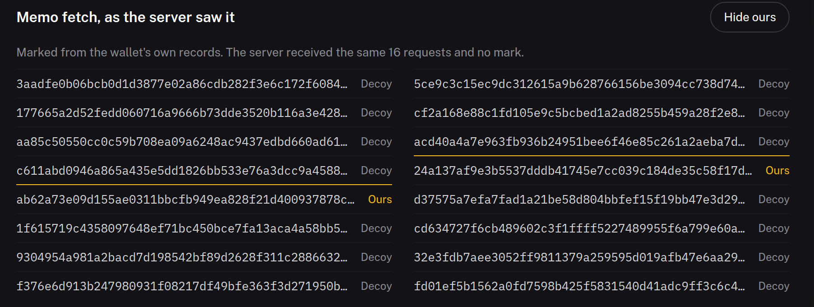
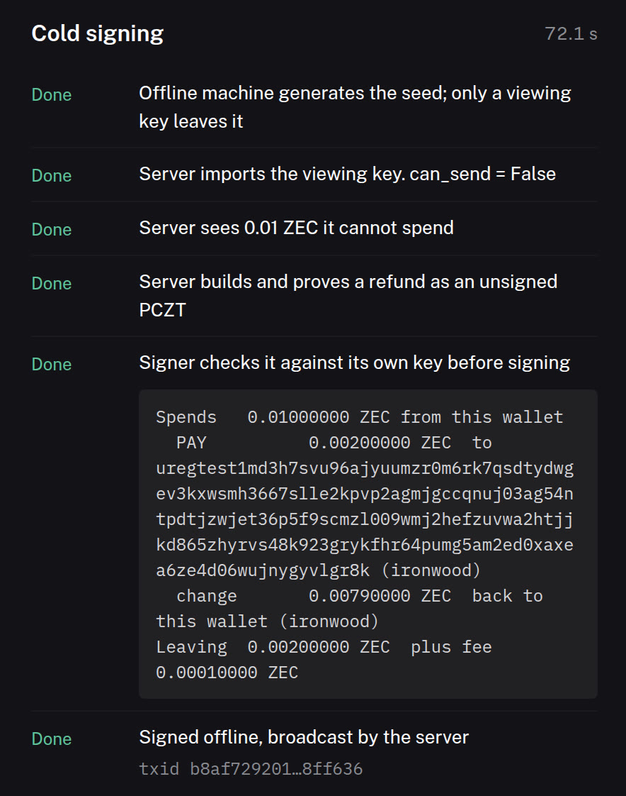

Zero leaks, measured
A proxy between wallet and server logged every request across create, sync, receive, restart and send. These are the requests that identified the wallet.
- ZecPy
- 0
- zcash-devtool
- 7
- zingo-cli
- 71
See it run
ZecPy Live replays a real run on a local chain. Every request the server receives lands in the table as it arrives.


Read the server's log
The audit's raw record. Pick a wallet; gold rows identify it.
| Scenario | Request | What it asks for | Server learns |
|---|---|---|---|
| First sync | GetAddressUtxosStream | Queries transparent address UTXOs | This wallet |
zcash-devtool: 7 identifying of 24 requests.
Fixed upstream
Building ZecPy found three problems in Zcash's own code. Each is filed with a fix.
-
Syncs reveal where the last one stoppedlibrustzcash links sessions through
GetTreeState#3197PR #3198 - A reorg onto a shorter branch goes unnoticedThe wallet reported 4 confirmations; the truth was 1 PR #3199
-
Cold signing skips Ironwood spendszcash-devtool's
pczt signexits 0, the send fails #266PR #267
A small API
Async where it touches the network. Amounts are integer zatoshis.
invoices.create
Each invoice gets its own shielded address. Payments match on your machine: no memo, no lookup.
invoice = wallet.invoices.create(150_000, "order-77")What it refuses
- Transparent paymentsPrivacyError unless you opt in
- Direct connectionsTor or nothing, a fresh circuit per sync and send
- Lone txid lookupsMemos fetched among 7 decoys
- A sync trailTree states at aligned heights only
- Mempool watchingPayments are seen in blocks
Install to paid
pip install zecpy on Linux or macOS, Python 3.10+. Nothing to compile.
from zecpy import Wallet
wallet, mnemonic = await Wallet.create(
"./shop", network="test",
server="https://testnet.zec.rocks:443")
invoice = wallet.invoices.create(150_000, "order-77")
async for event in wallet.invoices.watch():
if event.invoice_settled:
ship(event.invoice.reference)Install
- pip install zecpyseconds
Receive
- invoices.createown address
- payment detectednext block
- payment confirmed3 blocks
Send
- prove and sign locallyabout 11 s
- fee10,000 zat
Identifying requests0
Agent ready
The docs ship as plain text for models. Paste the brief, or point your agent at llms.txt.
You are writing Python that uses ZecPy, an SDK for shielded Zcash. Reference: https://zecpy.pages.dev/llms-full.txt - Network calls are async: await Wallet.create, sync, send, pay. - Amounts are integers in zatoshis. 1 ZEC = 100_000_000. - Never print, log or return the mnemonic. - Take payments with wallet.invoices.create and invoices.watch. Match by invoice, never by memo. - Pay links with wallet.pay(uri, max_zat=BUDGET). Never raise max_zat to make a payment go through. - PrivacyError is a refusal, not a bug. Do not pass allow_transparent or allow_pool_crossing unless asked. - Keep tor=True. Use network="test" until told otherwise.